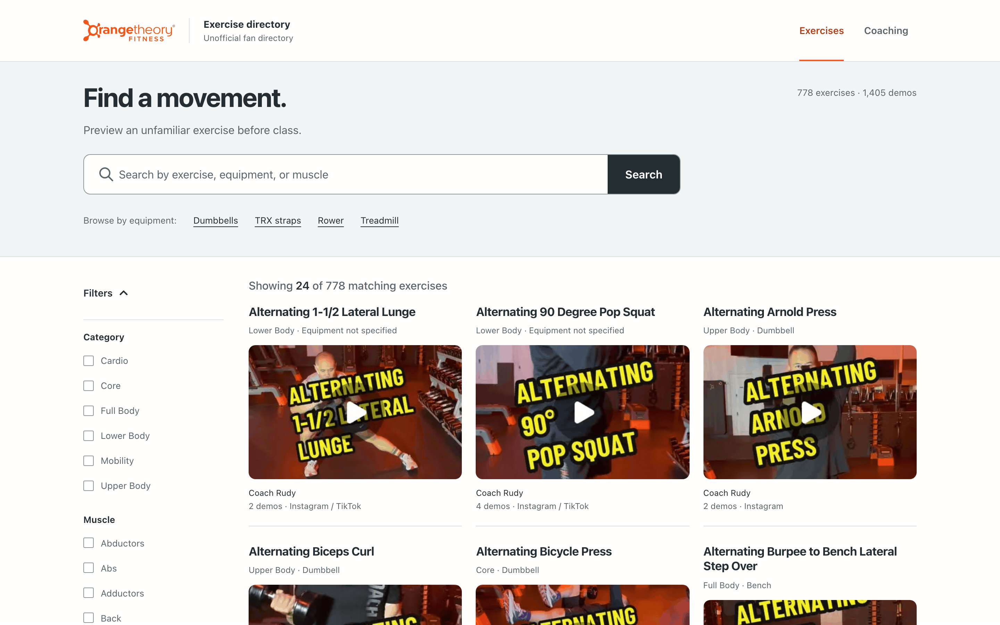
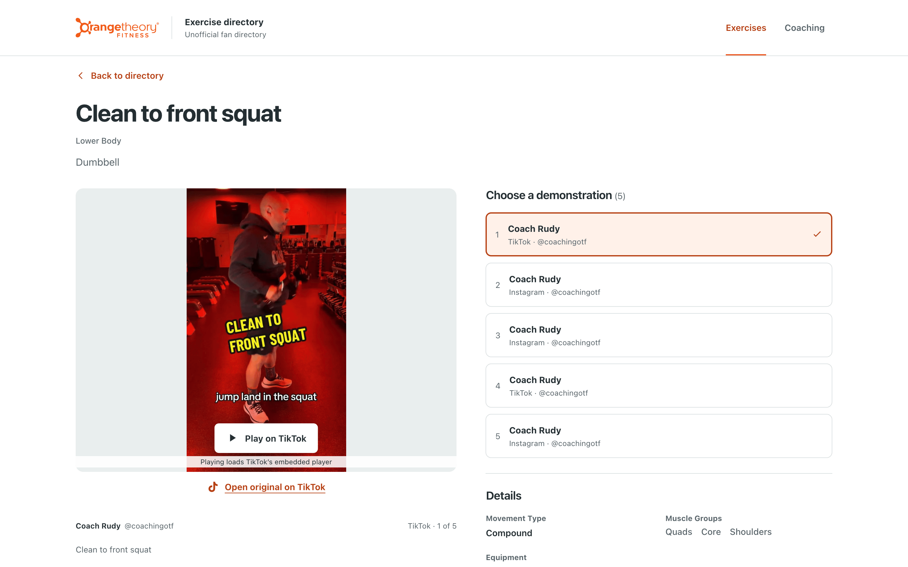
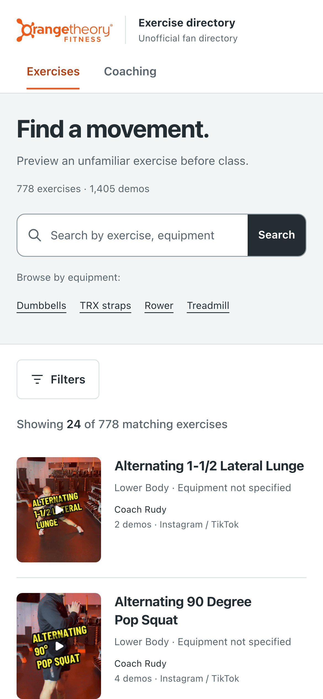

OTF Exercise Directory (unofficial)
Live: o-tf-exercises.vercel.app
In an Orangetheory class the coach calls out a move like "Y-Bell cross catch to shoulder press" and you have about ten seconds to work out what it means. This site is a searchable directory built for that moment. It pulls the short demo videos that OTF coaches post on Instagram and TikTok and organizes them into 778 exercises with 1,405 demo videos that you can search and filter. It also has a separate library of 515 coaching resources (655 videos) on technique, class delivery, and programming. It works on a phone mid-class and needs no sign-in.
Disclaimer: Unofficial fan directory — not affiliated with Orangetheory Fitness. Videos belong to their creators. Orangetheory, OTF, and related logos are trademarks of their respective owners.
A native SwiftUI companion app with the same catalog and offline search is in vdoshi96/OTf-exercises-ios.
| Directory (desktop) | Exercise detail | Mobile |
|---|---|---|
 |
 |
 |
Features
- Fuzzy search across exercise names, muscles, equipment, creators, cues, and video captions (Fuse.js, weighted fields). Results show which field matched ("Matched: Equipment").
- Faceted filters for category, muscle group, equipment, platform, and creator. The URL stores every filter, so any filtered view can be shared or bookmarked.
- One page per exercise. Pick between alternate demos, each credited to its creator. TikTok embeds and Instagram previews only load after you tap them, and the link to the original post works without JavaScript.
- Durable thumbnails. All 2,060 preview images are saved in the repo, because Instagram and TikTok CDN links expire.
- Old links still work. All 1,309 exercise URLs from an earlier version of the catalog still resolve. Each one opens the current page, redirects, offers a choice between split pages, or explains why the entry was removed.
- Accessible and responsive. Axe WCAG 2.1 AA checks and Chromium/WebKit browser tests run at 320, 390, and 1280 px widths.
How the catalog is built
creator feeds ──► ingestion ──► keyword enrichment ──► reviewed curation ──► static JSON
(IG, TikTok) yt-dlp / scripts/enrich_local.py data/catalog-curation.json src/data/*.json
instaloader
- Ingestion.
yt-dlpscans TikTok andinstaloaderplus a browser capture scan Instagram. Both collect post metadata (IDs, captions, timestamps) for the tracked creators.scripts/refresh_incremental.pyis incremental and fails closed: if a scan is rate-limited or incomplete, it changes nothing. - Enrichment.
scripts/enrich_local.pyreads each caption and applies keyword and pattern rules to extract a name, category, muscles, equipment, and movement type. Re-running it over the 1,055 enrichment records that have no curation override reproduces every one exactly, so this rule-based pass generated the published metadata.scripts/enrich_metadata.pyis a second version of this step that sends captions to Claude Haiku 4.5. It is in the repo but was not used to build the current catalog. - Curation. Every published exercise has pinned metadata in
data/catalog-curation.json: 778 exercise records and 2,104 video-level decisions (exercise, coaching, or excluded, each with a reason). Unresolved candidates wait indata/catalog-review-queue.jsonuntil someone makes a decision. Integrity checks confirm that the catalog, the ledger, and the thumbnails agree before every build.
The app was built iteratively with AI coding agents (Cursor and Codex). Specs,
plans, audits, and QA evidence for each change are in docs/.
Tech stack
- Next.js 16 (App Router, server components, static generation for about 1,900 pages) and React 19
- TypeScript, Tailwind CSS 4
- Fuse.js, run on the server. The client receives compact 24-item pages
from
/api/directory. - Python 3 data pipeline: yt-dlp, instaloader, and a Sharp-based thumbnail worker in Node
- Playwright and axe-core for browser and accessibility QA
- Hosted on Vercel (auto-deploys from
main) with Vercel Web Analytics. Route-aware CSP, anti-framing, and privacy headers.
Run locally
npm install
npm run dev # http://localhost:3000
Requires Node 22.18 or newer.
Tests
npm test # data, docs, directory, security, thumbnail, catalog suites
npm run lint
npm run typecheck
npm run build # also runs docs parity + catalog integrity first
# Browser QA against a running production build
npx next start -p 3013 &
BASE_URL=http://127.0.0.1:3013 npm run test:redesign # 24 screen/viewport checks + axe
BASE_URL=http://127.0.0.1:3013 npm run test:e2e # Chromium + WebKit smoke
Refreshing the data
npm run refresh # dry run: checks source completeness and candidate totals, writes nothing
npm run refresh:apply # applies the reviewed changes, backfills thumbnails, runs integrity checks
refresh:apply holds a single repository lock for the whole run. It records
progress in data/refresh-transaction.json so it can recover if it crashes
partway through writing several files. For thumbnail recovery details, see
the thumbnail pipeline. For release steps, see
the hosting guide.
Project layout
scripts/ ingestion, enrichment, refresh workflow, thumbnails, integrity checks
data/ curation ledger, review queue, refresh state and provenance
src/app/ directory, exercise + coaching detail, privacy, API route
src/lib/ directory filtering, URL query contract, Fuse.js search
src/data/ exercises.json (778), coaching.json (515), legacy route ledger
tests/ node:test + unittest suites, Playwright browser QA
docs/ design system, plans, audits, QA evidence, screenshots
See DESIGN.md for the design system and PRODUCT.md for product intent.
Documentation parity
Every project Markdown file has a generated HTML copy next to it. After you
edit any docs, run npm run docs:generate. npm run docs:check runs before
every build and fails if an HTML copy is missing or out of date.